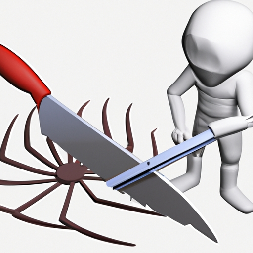

News
Organic Pest Control
Organic Pest Control
Neem Oil
Horticultural Oils
Plant Extracts and Essential Oils
Soaps and Detergents
Beneficial Insects and Predators
Bacterial Insecticides
Herbicides
Fungicides
Bacillus thuringiensis Bt
Cultural Practices
Trap Crops
Physical Barriers
Mulches and Cover Crops
Attractants and Repellents
Organic Formulations
Natural Substances
Insect Growth Regulators
Lures Traps Baits Gels Powders
Microbial Pathogens
Botanical Sprays
EcologyBased Strategies
NonToxic Formulations
Biofumigants
Plowdown Methods
Weed Suppression Techniques
Natural Pest Control
Natural Pest Control
Predatory Insects
Predatory Insects
Natural Pesticides
Natural Pesticides
Integrated Pest Management
Integrated Pest Management
About Us
Contact Us
Organic Pest Control: Natural Ways to Keep Pests Out of Your Home

Organic Pest Control: Natural Ways to Keep Pests Out of Your Home
Posted by on 2023-11-19
Organic pest control is a great way to keep critters out of your home without using harsh chemicals! It can be challenging to find natural ways for removing pests, but it's definitely worth it in the end. There's no need to (negatively) affect your family and the environment with hazardous substances.
Firstly, you should try preventative measures such as keeping food tightly sealed and disposing of garbage regularly. This will help stop pests from being attracted to your house in first place! Make sure you repair any holes or tears in screens so that bugs can't get inside. You also may want to consider planting certain shrubs or flowers around the exterior of your home - this may deter some bugs from entering.
In addition, if you find yourself dealing with an infestation, there are still natural ways to handle it. For instance, one popular method is using diatomaceous earth which is a powder made from fossilized algae that kills insects when they come into contact with it. It's important to remember though that diatomaceous earth doesn't work right away - so patience is key!
Another way to combat pests naturally is by introducing beneficial insects into the area near your home - such as ladybugs which are known for eating aphids and other destructive bugs. You could also make a homemade repellent using peppermint oil mixed with water and sprayed on areas where pests might enter like doorways or windowsills. Finally, don't forget about traps! Try setting up sticky pads or glue boards which will capture any unwanted visitors who wander onto them!
Overall, organic pest control provides an effective solution for protecting your home without having to resort to chemical-based methods. If done correctly, these natural techniques can be just as effective at keeping critters away! And while it might take some extra effort on your part - ultimately it'll be worth it for both yourself and the environment. So go ahead and give organic pest control a try today – let’s beat those bugs together!!
Previous
Next